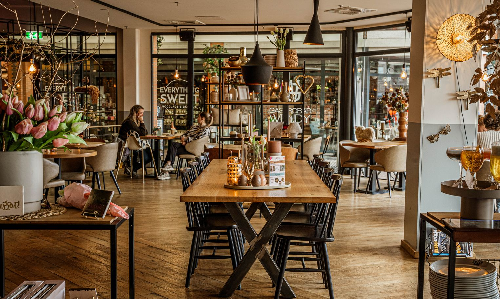
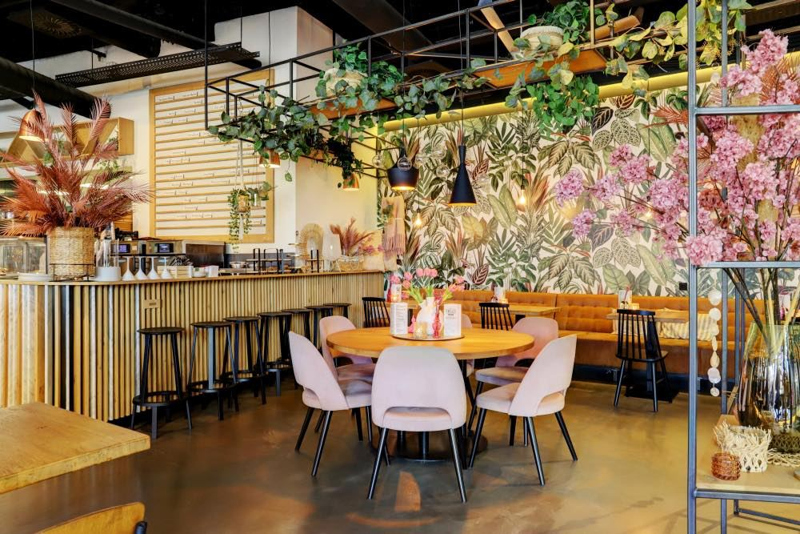
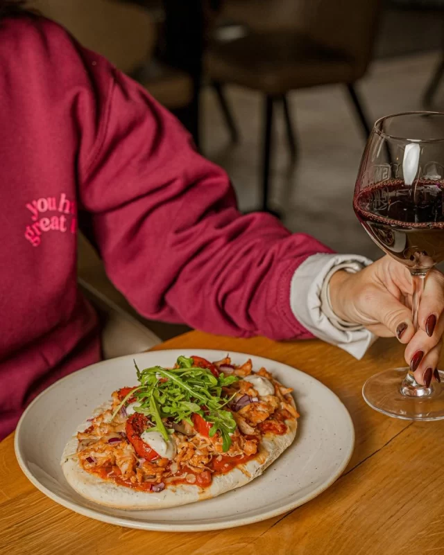
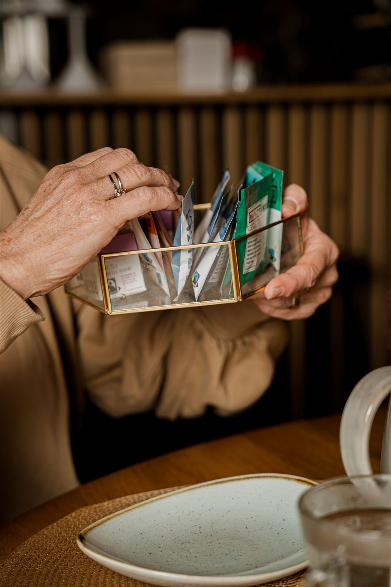
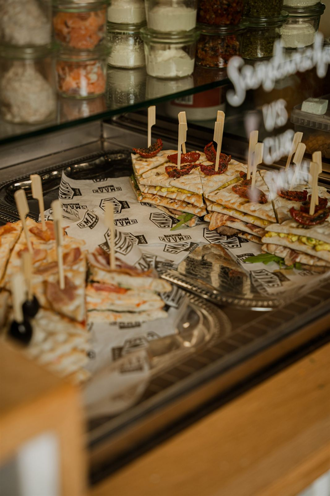
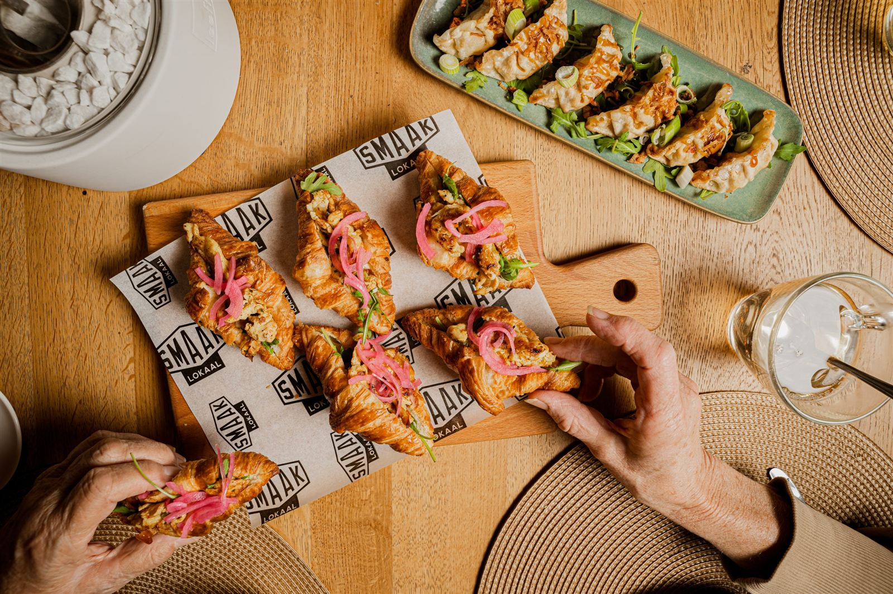
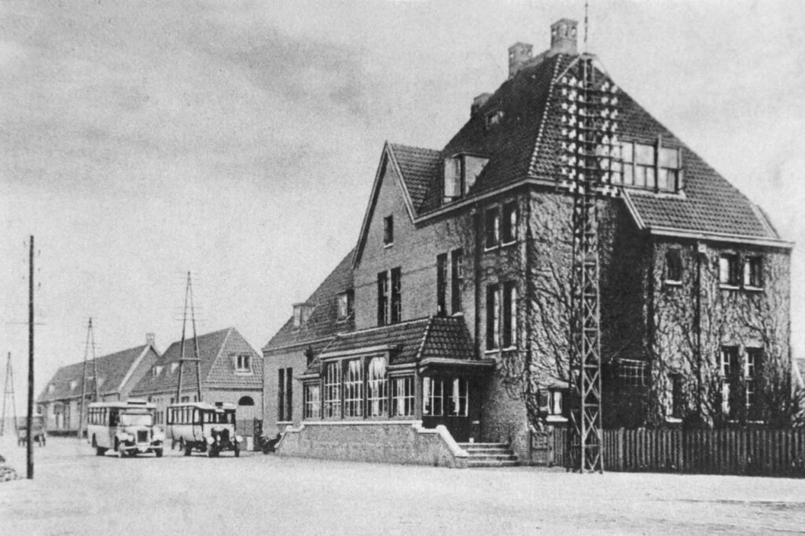

Een hippe, sfeervolle en eigentijdse zaak midden in het centrumhart van Rijen, waar pure smaken, verse ingrediënten en gastvrijheid centraal staan. Voor koffie, een uitgebreide lunch, een high tea of iets te vieren.




Sinds 2010 in het hart van Rijen
Smaak is een vertrouwde plek in Rijen: een fijne lunchroom waar je langskomt voor een goede kop koffie, een uitgebreide lunch, een gezellige high tea, iets te vieren of iets voor onderweg.
Dat we hier al zo lang staan, danken we vooral aan onze trouwe gasten en het warme, betrokken team dat zich elke dag met plezier inzet. We kijken ernaar uit je te verwelkomen!
Bij Smaak kun je niet alleen lekker genieten, maar ook mooie woonaccessoires en cadeautjes kopen. En er is schepijs. Kom eens kijken welke favorieten jij meeneemt.
Een greep uit onze mogelijkheden

Een gezellig en smakelijk uitje met vriendinnen, familie of collega's. De etagères worden feestelijk opgemaakt met zoete én hartige lekkernijen. In 3 rondes, inclusief koffie, (verse) thee en cappuccino.

Vier je verjaardag, jubileum of borrel in de huiskamer van Smaak. Bespreek je wensen met Maaike.
KoudBrie lolly (honing, walnoten, cranberry's) · carpaccio-rolletje (zontomaat, broadbeans, truffelmayo, Parmezaanse kaas, rucola) · caprese spies (mozzarella, tomaat, pesto, balsamico) · crostini-mix (tonijnsalade, eiersalade, krabsalade) · gamba-spies · sandwich-mix (club, carpaccio, vis) · wrap-mix (zalm, dille delight, rode ui, rucola / eiersalade, rucola, rode ui, komkommer)
WarmGlaasje soep met brood en smeersels · flatbread prosciutto (tomatensaus, geraspte kaas, truffelmayo, rucola, rode ui, prosciutto) · gyoza kip met teriyakisaus · tempura garnalen · kip yakitori spies · warme broodjes + friet (crispy chickenburger of broodje hamburger) of saté en friet (kipsaté, satésaus en kroepoek)
SnacksGemengde snacks · kaasstengels · bitterballen
Warme drankenKoffie, espresso, thee, cappuccino, koffie verkeerd, latte macchiato, warme chocolademelk, verse munt- of gemberthee met honing, kindercappuccino
FrisdrankenCoca-Cola (zero), Fanta Orange zero, Fanta Cassis, Sprite Zero, Fuze Tea (sparkling, lemon, green, peach), Rivella, Royal Bliss tonic, bitter lemon en ginger ale, Chaudfontaine blauw en rood, appelsap, Chocomel, Fristi, melk, ranja fruitmix
WijnZoete witte wijn, sauvignon blanc, chardonnay, rode huiswijn, Nero d'Avola, rosé huiswijn
BierHertog Jan 0,25 l en 0,45 l, Liefmans; 0,0%: Hertog Jan, Hoegaarden Radler, Liefmans
Speciaalbier (bij de € 5,00-uitbreiding)Hertog Jan Weizener, Leffe blond en bruin, Tripel Karmeliet, Hoegaarden wit, Duvel, Corona, IJwit
Een warme, rustige plek waar familie en vrienden na een afscheid samen kunnen komen om herinneringen te delen.
Een feestelijke setting met lekkere hapjes, drankjes en desgewenst een aangeklede borreltafel.
Vier het met een high tea (meest gekozen, € 29,50 p.p.), brunch of lunch op basis van consumptie.
Voor een zakelijke lunch, teamoverleg of brainstormsessie.
Proeven: 2,5 uur onbeperkt genieten van onze Smaak bites. Versieren: voor € 1,- per persoon (max. € 25,-) maken we je tafel of ruimte feestelijk, ook bij een gewone tafelreservering. Of je nu met 6 of 120 personen komt: alles is bespreekbaar.
Stuur je wens doorTip voor je vrije dag
De omgeving van Rijen is een paradijs voor wandelaars en fietsers: bossen, historische plekken en sfeervolle dorpen. Begin met een verse kop koffie, lunch onderweg of sluit af met een welverdiende traktatie. We zijn partner van Grensland de Baronie: in de zaak staat een kast vol fiets- en wandelroutes, de meeste gratis mee te nemen.

Je dagje Rijen begint in het sfeervolle stationsgebouw, een van de oudste stationsgebouwen van Nederland die nog in gebruik zijn. Rijen kreeg in 1863 een station, toen de spoorlijn tussen Breda en Tilburg openging. Na een brand in 1911 kwam er in 1916 een nieuw gebouw, een mooi voorbeeld van baksteenarchitectuur. In 2020 is het volledig gerenoveerd.
Binnen vertellen gastvrije vrijwilligers je graag meer over Rijen. Ook leuk: de Traditiekamer van Vliegbasis Gilze-Rijen.
Door de vier kernen van Gilze en Rijen, met na afloop een lunch bij Smaak. Te vinden op Route.nl.
Door bossen, heiden en polders, met halverwege een pauze bij Brasserij Offcourse aan de rand van de Chaamse bossen. Te vinden bij Routiq.
Door de Toerlezjoere-regio tussen Breda, Tilburg en de Belgische grens: rust, ruimte en natuur, en onderweg lekker eten.
Een gemakkelijke bos- en heidewandeling: eerst door het dorp, dan de bossen in, langs heide en vijvers en terug over leuke bospaadjes. Bij de vijvers in te korten. Te vinden in de wandelgids.
Happen & Trappen
Een smakelijke en afwisselende fietstocht door het Rondje Toerlezjoere, waarbij je op vijf sfeervolle locaties culinair wordt verwend. Onderweg: de landgoederen van de Baronie, Kasteel Bouvigne bij Breda en de heide, bossen en beekjes van de Brabantse Kempen.
Happen & Trappen reserverenNieuws & events
Updates over onze menu's, samenwerkingen en wat er binnenkort op het programma staat vind je op onze Instagram en Facebook.
Durf jij de dader te ontmaskeren? Een driegangendiner met interactief theater: een smaakvol diner, professioneel entertainment en interactieve spelbegeleiding. Meerdere avonden; tickets via de ticketshop.
Samen met Clay Café keramiek beschilderen onder het genot van een borrelplank en Smaak-bubbels: een grote schaal, 2 koffiekopjes, een borrelplank of een vaas.
Ben jij klaar voor een nieuwe uitdaging in de horeca, bijvoorbeeld als allround keukenmedewerker? Stuur je open sollicitatie naar info@smaakrijen.nl.
Contact & locatie
Iedere dag
09:30 – 17:00
Smaak Rijen
Wilhelminaplein 26-29
5121 ES Rijen
+31 (0)161 - 22 68 37
info@smaakrijen.nl
Reserveer een tafel, een high tea of een arrangement, of vraag meer informatie. We reageren zo snel mogelijk.